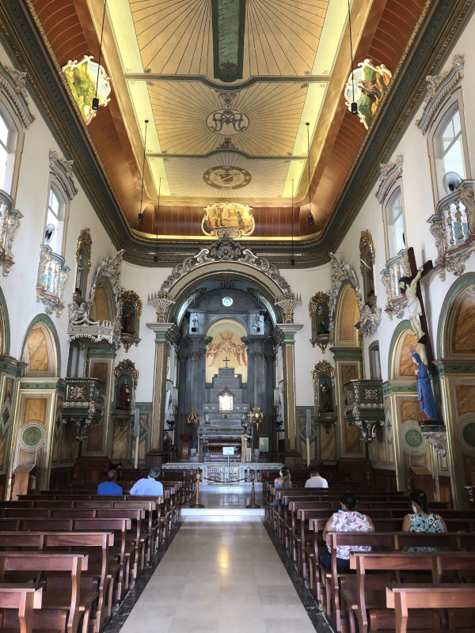

03/2023
Aparecida - SP
Aparecida inicia sua história em meados de outubro de 1717 quando da chegada do Governador e Capitão-geral da Capitania de São Paulo e das terras das Minas Gerais, Dom Pedro Miguel de Almeida Portugal e Vasconcelos, conhecido também como Conde de Assumar, que passaria na Vila de Santo Antônio de Guaratinguetá a caminho de Vila Rica, atual Ouro Preto.
Para alimentar o futuro Conde e sua comitiva, foram notificados pela Câmara de Guaratinguetá, os pescadores que viviam à margem ribeirinha do Rio Paraíba do Sul mesmo sabendo que o período não era propício para a pesca.

![ Segundo os relatos históricos, os pescadores saíram do porto José Corrêa Leite e foram até às margens do porto Itaguaçu sem pegar peixe algum, mas João Alves ao lançar sua rede, sente algo preso e ao puxá-la, retira o corpo de uma imagem quebrada, sem a cabeça. Descendo as correntezas do rio, lançando a rede, veio então à cabeça que se encaixava perfeitamente na imagem quebrada. Os pescadores acreditando ser um sinal divino e ao jogarem novamente as redes surgiu, portanto, a abundância de peixes.](../../cidades/aparecida-sp/imagens/basilica.png){kind=link}
{kind=link}
{kind=link}
{kind=link}
{kind=link}
{kind=link}